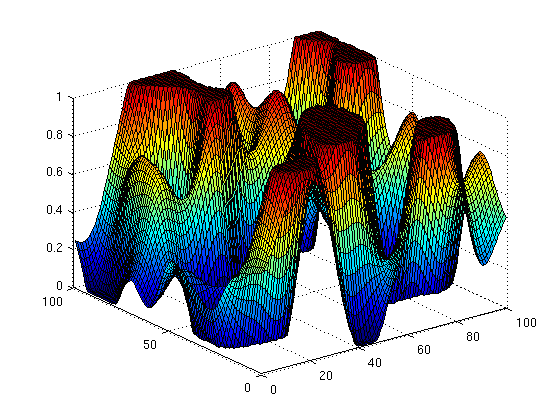

fn_clip
Rescale and restrict to a specific range ("clip") the data in an array. Make a color image if requested.
Contents
Syntax
x = fn_clip(x,clipflag,outflag)
Input:
- x array (any dimension)
- clipflag clipping mode:
[a b] define manually min and max value
'fit','mM' or 'minmax' use minimum and maximum [default]
'Xstd' use mean and X times standard deviation
- outflag output format
[a b] define minimum and maximum value [default, with
a=0 and b=1]
n integer values between 1 and n
nx3 array returns a (n+1)-dimensional array using this
colormap
char array use this colormap (for example 'jet' -> use
jet(256))Example
x = imfilter(randn(100),fspecial('gaussian',50,7)); x = fn_clip(x,'STD',[0 1]); c = fn_clip(x,[0 1],'jet'); figure(1), surf(x,'cdata',c)
Source
Thomas Deneux
Copyright 2007-2012